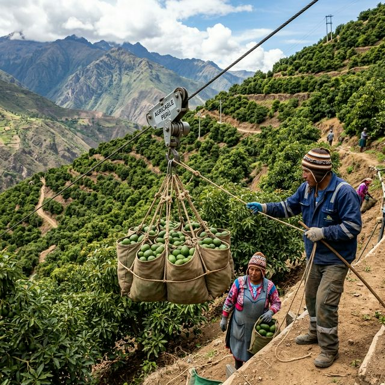
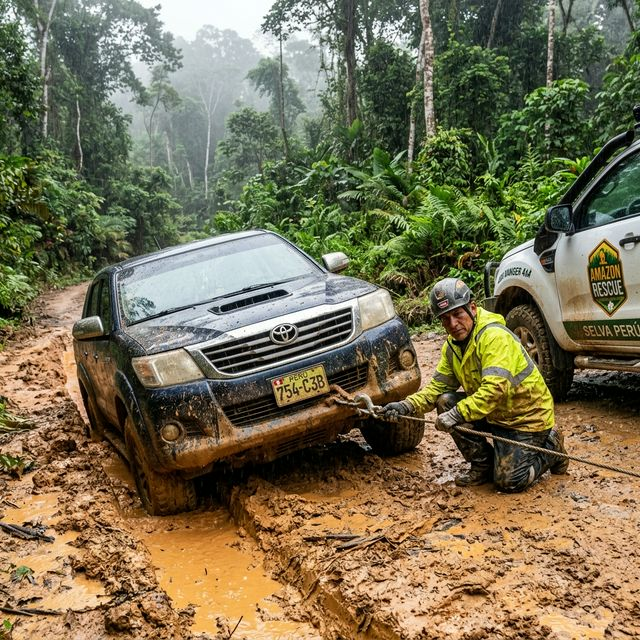

Gancho de Arrastre para Chacras
Especialistas en la venta de equipos industriales para la modernización del campo.
Ver InformaciónNuestro Trabajo en Acción
Testimonios reales de la implementación de tecnología Agroindustriall en el campo peruano.
Demostración en Vivo
Pruebas en campo de equipo de arrastre con motor de alta potencia.
Potencia de Vanguardia
Implementación de motor Honda GX440 de 18HP para tareas pesadas.

Cosecha en Laderas
Sistema Agricable en la Sierra: Cosecha de paltas en pendientes del 45%.

Rescate en Selva
Recuperación de vehículos en caminos lodosos de la Amazonía con malacate manual.
¿Qué es y para qué sirve?
El Gancho de Arrastre es una herramienta mecánica diseñada para facilitar el movimiento de cargas pesadas en terrenos difíciles. En la agricultura moderna, es esencial para:
- Transportar cosechas en laderas y terrenos inclinados.
- Mover maquinaria pequeña sin esfuerzo excesivo.
- Remolcar vehículos en situaciones de emergencia.
Su función principal es multiplicar la fuerza humana, permitiendo que un solo operario mueva hasta 300 kg o más con total seguridad.
Componentes Principales
Este sistema robusto está compuesto por:
- Gancho de Acero: Con pestillo de seguridad.
- Cable de Alta Resistencia: De acero o material sintético.
- Malacate (Winche): Con engranajes multiplicadores.
- Manivela Ergonómica: Para un accionamiento suave.
- Freno Automático: Máxima seguridad en cada giro.
Instalación Fácil
- Elija una base firme (tronco, viga o soporte rígido).
- Sujete el equipo con pernos de alta resistencia.
- Coloque la manivela y asegúrela firmemente.
- Verifique que el cable esté bien enrollado antes de empezar.
⚠️ Normas de Seguridad
Para nosotros, tu seguridad es lo primero:
* Nunca use este equipo para elevar personas.
* No exceda la capacidad de carga indicada (300kg - 1000kg).
* Engrase las partes móviles regularmente para evitar el desgaste.